Here is an important question in computer science.
If an algorithm takes one second to process N items,
how much time will it take to process 100 N items?
The most naive response to this question is to assume that the run time for an algorithm scales directly with the size of the data set. If N items take 1 second to process, 100 N items must take 100 seconds to process.
As we will see, this is almost never the case. For most algorithms, as the size of the data set to be processed increases, the run time of the algorithm does not grow in a simple, linear fashion.
In these notes we will begin to explore techniques for estimate the rate of growth for run times for common algorithms.
Here is the first definition we are going to encounter in this discussion.
The time that a particular algorithm needs to process a data set with N items in it is T(N).
Unfortunately, this simple definition immediately raises a number of important questions. Here are some observations that will complicate this definition.
For these reasons and others that we will encounter as we go along, T(N) is not the most useful way to get at our central concerns. Also, thinking back to the question I asked at the start of these notes, what is going to concern us more than T(N) is the rate of growth of T(N) as N grows.
The questions and ideas I have introduced so far are all part of an important area in computer science, algorithm analysis. The best way to begin to explain what algorithm analysis is is to start by showing a concrete example. Here is the pseudocode for a common sorting algorithm, selection sort.
void sort(int A[],int N) {
int n = 0;
while(n < N) {
int smallest = A[n];
int where = n;
int k = n + 1;
while(k < N) {
if(A[k] < smallest) {
smallest = A[k];
where = k;
}
k = k + 1;
}
A[where] = A[n];
A[n] = smallest;
n = n + 1;
}
}
The next step in the analysis is to annotate this source code with information about how much time each of these statements takes to run, along with a count of how many times the statements get executed.
void sort(int A[],int N) {
int n = 0; // c1 , 1 time
while(n < N) { // c2 , N + 1 times
int smallest = A[n]; // c3 , N times
int where = n; // c4 , N times
int k = n + 1; // c5 , N times
while(k < N) { // c6 , 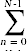 (N - n) times
if(A[k] < smallest) { // c7 , 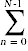 (N - n - 1) times
smallest = A[k]; // c8 , ?? times
where = k; // c9 , ?? times
}
k = k + 1; // c10 , (N - n - 1) times
}
A[where] = A[n]; // c11 , N times
A[n] = smallest; // c12 , N times
n = n + 1; // c13 , N times
}
}
One immediate uncertainty here is the number of times the statements in the body of the if get executed. Since the test in the if statement will not always evaluate to true, these statements will get run for a number of times that is impossible to determine. The best we can do with these statements is to place an upper bound on how many times those statements get executed. An upper bound on the number of times the statements in the body get executed is the number of times the if test gets evaluated.
Next, we need to simplify the summatations that appear above. For this you will need to remember standard techniques for computing summations that you learned in calculus.
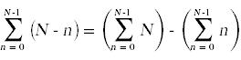
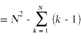
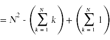
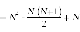
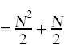
Likewise,
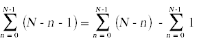
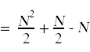
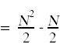
Here again is the annotated source code with the summations simplified and the total run time for each individual statement shown off to the right, taking into account how many times each statement gets executed.
void sort(int A[],int N) {
int n = 0; // c1
while(n < N) { // c2 (N + 1)
int smallest = A[n]; // c3 N
int where = n; // c4 N
int k = n + 1; // c5 N
while(k < N) { // c6 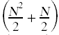
if(A[k] < smallest) { // c7 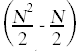
smallest = A[k]; // ≤ c8
where = k; // ≤ c9 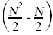
}
k = k + 1; // c10
}
A[where] = A[n]; // c11 N
A[n] = smallest; // c12 N
n = n + 1; // c13 N
}
}
We can now total up the run time for all statements in algorithm. To emphasize this total's dependence on N, I will rearrange the terms in the grand total:
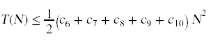
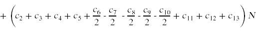
+ (c1 + c2)
Since all of these constants are unknown to us, we can consolidate our ignorance into some simpler coefficients.
T(N) ≤ C1 N2 + C2 N + C3
We can now say something concrete about the rate of growth of T(N) for this algorithm: the run time grows quadratically as the size of the list to be sorted grows.
As we saw in the example above, in most cases where we attempt to estimate the run time of an algorithm we will end up developing an upper bound for the run time. This motivates the following important definition:
A function f(n) is said to be O(g(n)) if there exists a constant C and an N0 > 0 such that f(n) ≤ C g(n) for all n ≥ N0.
Here is a picture from the textbook that illustrates the key ideas in this definition.
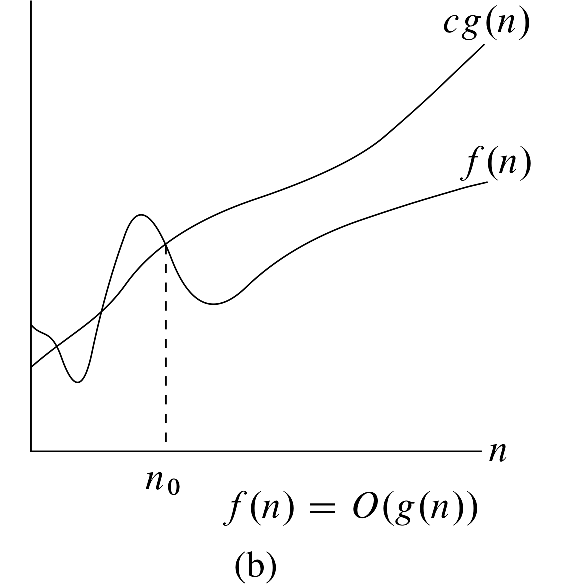
The main idea here is that we want to use a simple function, g(n), to put a tight upper bound on the growth of some more complex function, f(n).
The T(N) we computed for selection sort is O(N2), because
T(N) ≤ C1 N2 + C2 N + C3 ≤ C N2
for some appropriate choice of C.
In chapter 2 in the textbook you will find a similar analysis for the insertion sort algorithm.
Here is some annotated pseudocode for insertion sort.
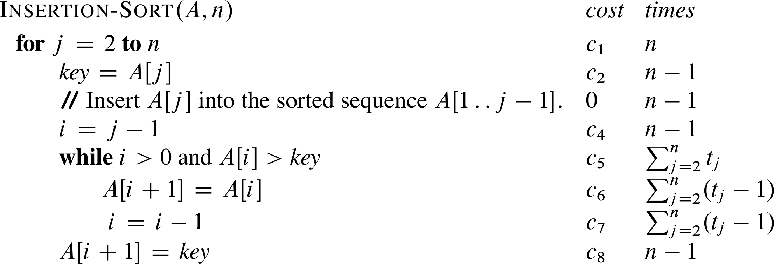
An interesting difference between selection sort and insertion sort is the nature of the uncertainty in the run time of both algorithms. A small uncertainty in selection sort is how many times the statements in the body of the if statement get executed. This uncertainty is small, because even if we assume that the statements in the body of the if never get run, we will still arrive at a bound for the run time that is O(N2), because we know that the test in the if statement has to be executed a predictable number of times, no matter what the data set looks like. Insertion sort contains a larger uncertainty. The uncertainty in insertion sort is how many times the while loop gets executed on each iteration of the for loop.
About all we can do with the while loop in insertion sort is to place bounds on how many times it runs on each iteration of the outer loop. The lower bound is that the test in the while loop immediately evaluates to false when we first encounter it. This results in best case run time estimate for insertion sort that is O(N). The upper bound is that the while loop keeps running until i reaches 0 every single time we go through the outer loop. This results in a worst case run time estimate for insertion sort that is O(N2).
A more useful question to ask about insertion sort is how many times the inner loop runs on average. To answer this question we will need to bring in some ideas from probability theory. We will return to this question when we get to chapter 5.
Here is pseudocode for another sorting algorithm, merge sort.
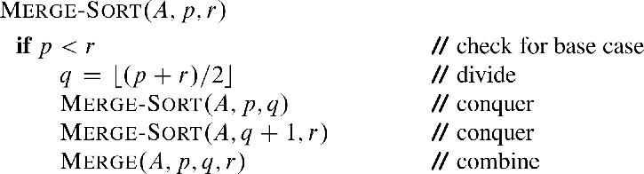
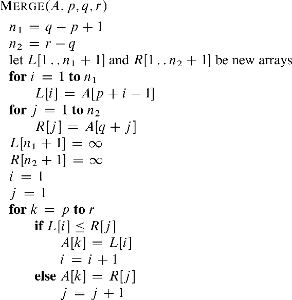
Merge sort requires a different sort of analysis because it is a recursive algorithm.
Because merge sort is a divide and conquer type of algorithm, it does its work by splitting the list to be sorted into halves and then calling itself recursively on both halves. This naturally leads to a recurrence relation for the run time of merge sort:
T(N) = TMERGE(N) + 2 T(N/2)
It is an easy exercise to determine that the run time for the MERGE function is O(N). This makes the recurrence relation for the full merge sort
T(N) = c N + 2 T(N/2)
The picture below shows one method we can use to analyze this recurrence relation. The picture shows an expanded version of the call tree for merge sort, annotated with the time used by the merges in each recursive call.
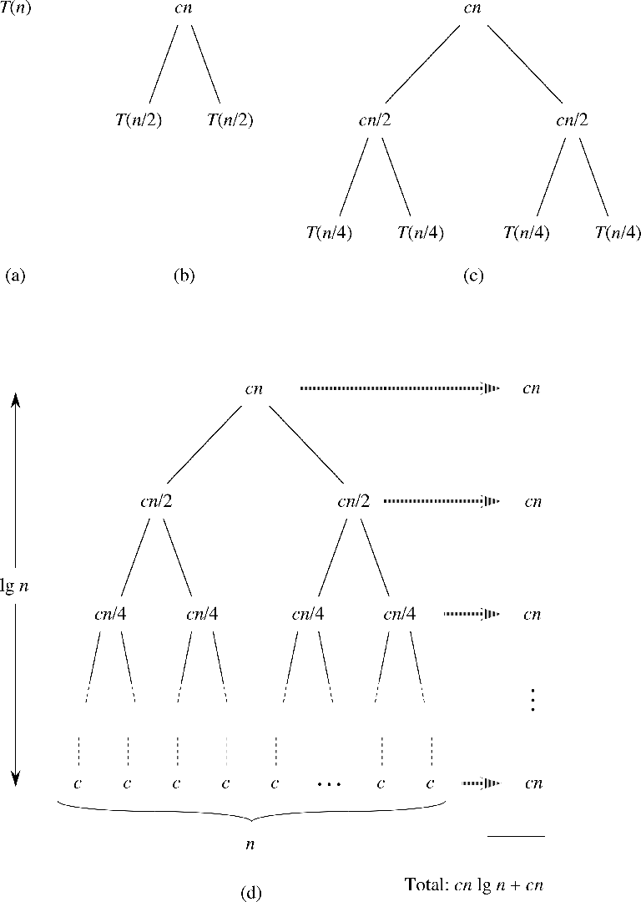
An interesting observation about the time used by the merges at each level of the call tree is that they sum to c n across the nodes in each level of the call tree. Thus, the total time used by all of the merges throughout merge sort is just c n times the number of levels in the call tree, which is bounded by lg n. This tells us that
T(N) ≤ c N lg N + c n
which tells us that merge sort is O(N lg N).